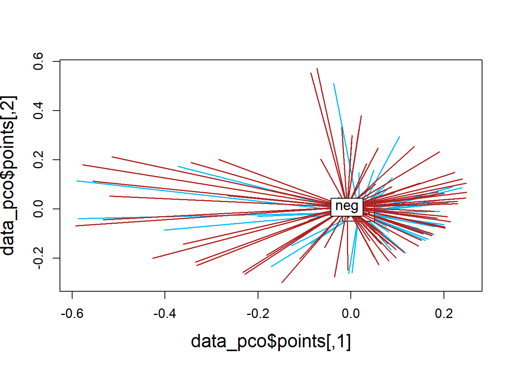
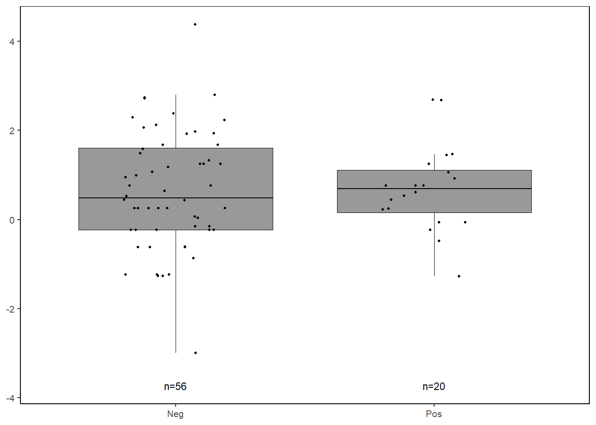
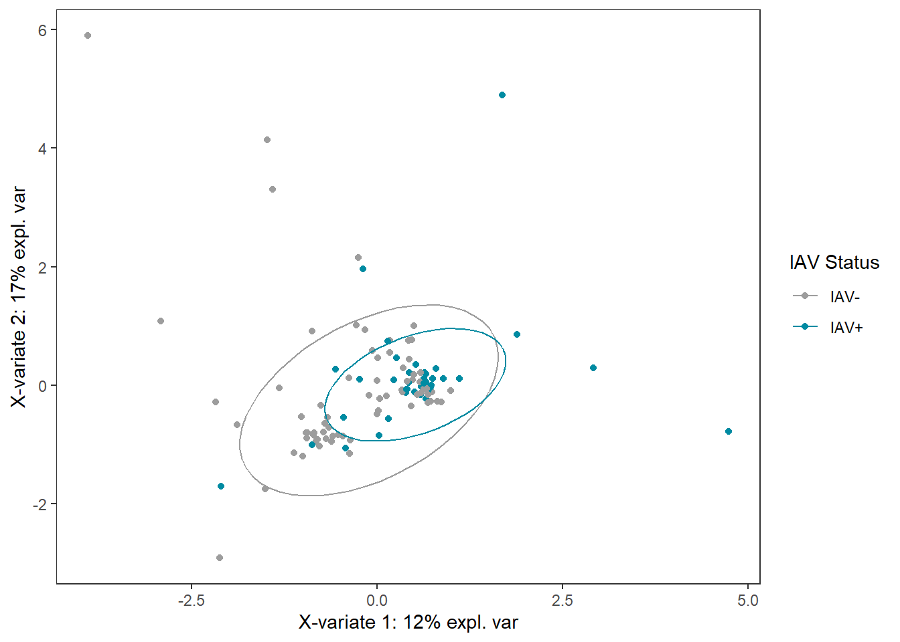
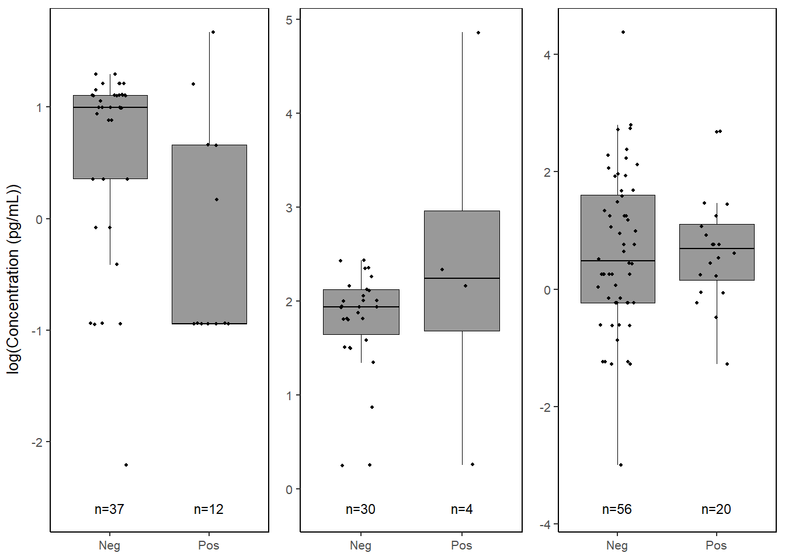
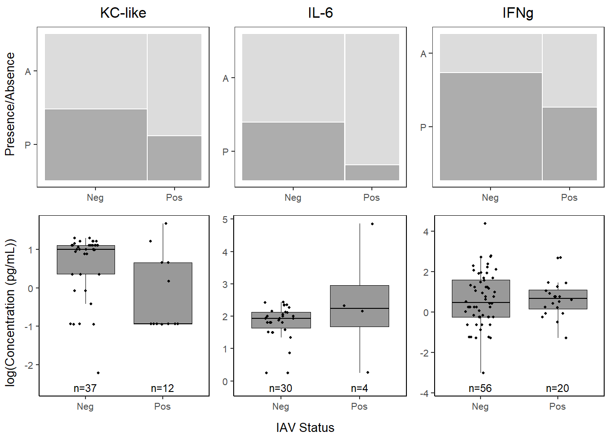
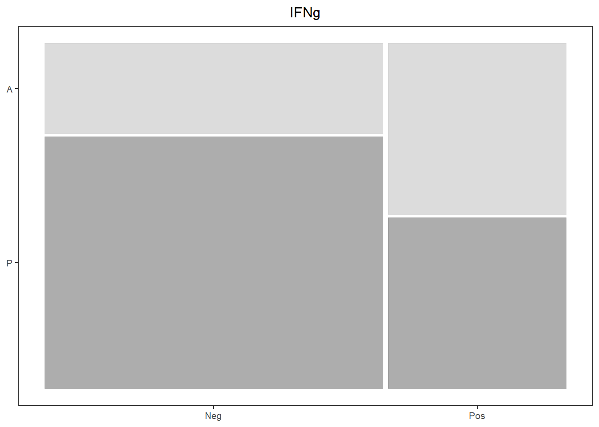
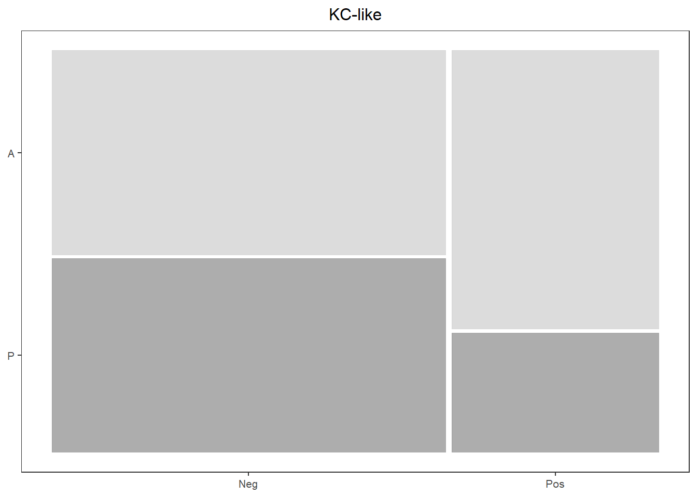
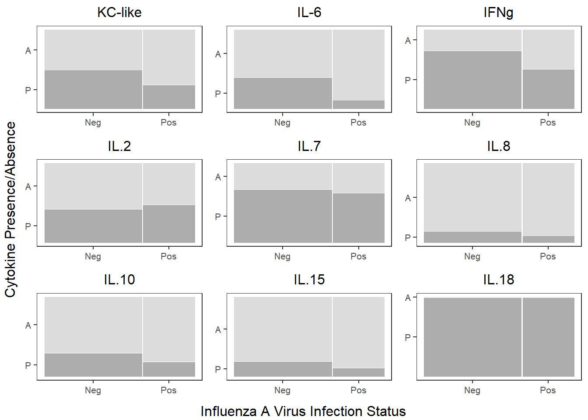

6 IAV ~ cytokines
6.1 Libraries
library(vegan)
library(ggfortify)
library(ggpubr)
library(gridExtra)
library(ggmosaic)
library(cramer)
library(mlr3)
library(paradox)
library(mlr3tuning)
library(rpart)
library(rpart.plot)
library(mixOmics)
library(tidyverse)
library(fasano.franceschini.test)
library(EnvStats)
library(grid)
library(pairwiseAdonis)6.2 Data
cyto <- read.csv("Output Files/cleaned_cytokine.csv")
cytobin <- read.csv("Output Files/cleaned_cytokine_bin.csv")
cytoscale <- read.csv("Output Files/cleaned_cytokine_scaled.csv")
meta <- read.csv("Output Files/metadata_cyto.csv")
# Merge cytokine & metadata
data <- merge(cyto, meta, by="Sample") %>%
filter(!is.na(iav))
databin <-
merge(cytobin, meta, by="Sample") %>%
filter(!is.na(iav))
datascale <-
merge(cytoscale, meta, by="Sample") %>%
filter(!is.na(iav))6.3 PCA
6.3.1 Visualize
PCA_scaled_df <- data.frame(x=PCA_scaled_iav$x[,1],
y=PCA_scaled_iav$x[,2],
iav=datascale$iav)
pca_labelx <-
paste("PC1 (",
round(abs(summary(PCA_scaled_iav)$importance[2,1]*100), digits=2),
"%)",
sep="")
pca_labely <-
paste("PC2 (",
round(abs(summary(PCA_scaled_iav)$importance[2,2]*100), digits=2),
"%)",
sep="")
PCA_scaled_ggplot <-
ggplot(PCA_scaled_df,
aes(x=x,
y=y,
col=iav)) +
geom_point() +
stat_ellipse() +
labs(x=pca_labelx,
y = pca_labely) +
scale_color_manual("IAV Status",
values=c("#9d9d9d","#008ba2", "#000000")) +
theme_bw() +
theme(panel.grid=element_blank(),
legend.position.inside=c(0.1, 0.1))
PCA_scaled_ggplot
6.4 PERMANOVA
6.4.1 Cytokine Presence/Absence
6.4.1.1 Create similarity matrix (Sorensen)
databin_perm <-
databin %>%
select(2:10)
databin_dist <-
betadiver(databin_perm, method=11)
plot(databin_dist)
# Dissimilarity summary stats
mean(1-databin_dist); min(1-databin_dist); max(1-databin_dist); median(1-databin_dist)## [1] 0.4016769## [1] 0## [1] 0.8## [1] 0.46.4.1.2 PERMANOVA with dissimilarity (1-Sorensen)
R2 = partial R2 = factor (molt stage) is explaining at least R2 * 100% of variation in variables (cytokines)
## Permutation test for adonis under reduced model
## Permutation: free
## Number of permutations: 4999
##
## adonis2(formula = (1 - databin_dist) ~ iav, data = databin, permutations = 4999)
## Df SumOfSqs R2 F Pr(>F)
## Model 1 0.3814 0.03362 3.9657 0.0134 *
## Residual 114 10.9638 0.96638
## Total 115 11.3452 1.00000
## ---
## Signif. codes: 0 '***' 0.001 '**' 0.01 '*' 0.05 '.' 0.1 ' ' 1## [1] 3.3617256.4.1.3 Visualizing multivariate groups
6.4.1.3.2 Plot
plot(databin_pco$points, type="n",
cex.lab=1.5, cex.axis=1.1, cex.sub=1.1)
ordispider(jitter(databin_pco$points, factor=1), factor(databin$iav), show.groups="pos",
col="deepskyblue", label = TRUE, display="sites", lwd=1.5, cex=1.2)
ordispider(jitter(databin_pco$points, factor=1), factor(databin$iav), show.groups="neg",
col="firebrick", label = TRUE, display="sites", lwd=1.5, cex=1.2)
6.4.1.4 Homogeneity of group dispersions
## Warning in betadisper(databin_dist, group = databin$iav, type = "centroid"):
## some squared distances are negative and changed to zero## Analysis of Variance Table
##
## Response: Distances
## Df Sum Sq Mean Sq F value Pr(>F)
## Groups 1 0.00427 0.0042674 0.376 0.541
## Residuals 114 1.29399 0.0113508##
## Homogeneity of multivariate dispersions
##
## Call: betadisper(d = databin_dist, group = databin$iav, type =
## "centroid")
##
## No. of Positive Eigenvalues: 103
## No. of Negative Eigenvalues: 12
##
## Average distance to centroid:
## neg pos
## 0.4387 0.4259
##
## Eigenvalues for PCoA axes:
## (Showing 8 of 115 eigenvalues)
## PCoA1 PCoA2 PCoA3 PCoA4 PCoA5 PCoA6 PCoA7 PCoA8
## 0.5 0.5 0.5 0.5 0.5 0.5 0.5 0.5
6.4.2 Cytokine Concentration
data_perm <-
data %>%
select(2:10)
data_dist <-
vegdist(data_perm, method="bray")
data_adonis <- adonis2(data_dist ~ iav, data=data,
permuations=4999)
data_adonis## Permutation test for adonis under reduced model
## Permutation: free
## Number of permutations: 999
##
## adonis2(formula = data_dist ~ iav, data = data, permuations = 4999)
## Df SumOfSqs R2 F Pr(>F)
## Model 1 0.2609 0.01366 1.5784 0.129
## Residual 114 18.8403 0.98634
## Total 115 19.1011 1.00000## [1] 1.365666.4.2.1 Visualizing multivariate groups
6.4.2.1.2 Plot
plot(data_pco$points, type="n",
cex.lab=1.5, cex.axis=1.1, cex.sub=1.1)
ordispider(jitter(data_pco$points, factor=1), factor(data$iav), show.groups="pos",
col="deepskyblue", label = TRUE, display="sites", lwd=1.5, cex=1.2)
ordispider(jitter(data_pco$points, factor=1), factor(data$iav), show.groups="neg",
col="firebrick", label = TRUE, display="sites", lwd=1.5, cex=1.2)

6.5 Cramer Test
Multivariate composition of the cytokine pattern between each infection stage group with its control. It can handle multiple variables, potentially complex interactions and correlations.
# Separate data by infection stage
infected <-
datascale %>%
filter(iav=="pos") %>%
select(2:10) %>%
data.matrix()
uninfected <-
datascale %>%
filter(iav=="neg") %>%
select(2:10) %>%
data.matrix()
control <-
datascale %>%
filter(stage=="control") %>%
select(2:10) %>%
mutate_at(1:9, as.numeric) %>%
data.matrix()
acute <-
datascale %>%
filter(stage=="acute") %>%
select(2:10) %>%
mutate_at(1:9, as.numeric) %>%
data.matrix()
peak <-
datascale %>%
filter(stage=="peak") %>%
select(2:10) %>%
mutate_at(1:9, as.numeric) %>%
data.matrix()
late <-
datascale %>%
filter(stage=="late") %>%
select(2:10) %>%
mutate_at(1:9, as.numeric) %>%
data.matrix()
# Run Cramer Tests!
cramer.test(infected, uninfected)##
## 9 -dimensional nonparametric Cramer-Test with kernel phiCramer
## (on equality of two distributions)
##
## x-sample: 40 values y-sample: 76 values
##
## critical value for confidence level 95 % : 3.329583
## observed statistic 5.335451 , so that
## hypothesis ("x is distributed as y") is REJECTED .
## estimated p-value = 0.001998002
##
## [result based on 1000 ordinary bootstrap-replicates]##
## 9 -dimensional nonparametric Cramer-Test with kernel phiCramer
## (on equality of two distributions)
##
## x-sample: 52 values y-sample: 34 values
##
## critical value for confidence level 95 % : 3.264692
## observed statistic 3.828701 , so that
## hypothesis ("x is distributed as y") is REJECTED .
## estimated p-value = 0.01598402
##
## [result based on 1000 ordinary bootstrap-replicates]##
## 9 -dimensional nonparametric Cramer-Test with kernel phiCramer
## (on equality of two distributions)
##
## x-sample: 52 values y-sample: 6 values
##
## critical value for confidence level 95 % : 3.970217
## observed statistic 2.088302 , so that
## hypothesis ("x is distributed as y") is ACCEPTED .
## estimated p-value = 0.4645355
##
## [result based on 1000 ordinary bootstrap-replicates]##
## 9 -dimensional nonparametric Cramer-Test with kernel phiCramer
## (on equality of two distributions)
##
## x-sample: 52 values y-sample: 24 values
##
## critical value for confidence level 95 % : 3.697459
## observed statistic 3.959685 , so that
## hypothesis ("x is distributed as y") is REJECTED .
## estimated p-value = 0.03196803
##
## [result based on 1000 ordinary bootstrap-replicates]6.6 Cytokine Importance
6.6.1 Cross Validation
# Creating task and learner
task <- as_task_classif(iav ~ .,
data = data_cart)
task <- task$set_col_roles(cols="iav",
add_to="stratum")
learner <- lrn("classif.rpart",
predict_type = "prob",
maxdepth = to_tune(2, 5),
minbucket = to_tune(1, 40),
minsplit = to_tune(1, 30)
)
# Define tuning instance - info ~ tuning process
instance <- ti(task = task,
learner = learner,
resampling = rsmp("cv", folds = 10),
measures = msr("classif.ce"),
terminator = trm("none")
)
# Define how to tune the model
tuner <- tnr("grid_search",
batch_size = 10
)
# Trigger the tuning process
#tuner$optimize(instance)
# optimal values:
# maxdepth = 5
# minbucket = 7
# minsplit = 17
# classif.ce = 0.29393946.6.2 Run model with optimized parameters
cart_model <- rpart(formula=iav ~ .,
data=data_cart,
method="class",
maxdepth=5,
minbucket=7,
minsplit=17)
# plot optimized tree
rpart.plot(cart_model)
## KC.like IL.6 IFNg IL.18 IL.10 IL.8 IL.15
## 5.782088 4.532388 4.522282 4.158960 4.111230 1.438930 0.4111236.6.3 Manuscript Plot
Variable importance: the sum of the goodness of split measures for each split for which it was the primary variable, plus goodness * (adjusted agreement) for all splits in which it was a surrogate. In the printout these are scaled to sum to 100 and the rounded values are shown, omitting any variable whose proportion is less than 1%. (https://cran.r-project.org/web/packages/rpart/vignettes/longintro.pdf)
6.6.3.1 Variable Importance
varimp <-
data.frame(imp=cart_model$variable.importance) %>%
rownames_to_column() %>%
rename("variable" = rowname) %>%
arrange(imp) %>%
mutate(variable=gsub("\\.","-",variable),
variable = forcats::fct_inorder(variable))
varimp_plot <-
ggplot(varimp) +
geom_segment(aes(x = variable,
y = 0,
xend = variable,
yend = imp),
linewidth = 0.5,
alpha = 0.7) +
geom_point(aes(x = variable,
y = imp),
size = 1,
show.legend = F,
col="black") +
labs(x="Cytokine",
y="Variable Importance") +
coord_flip() +
theme_classic() +
theme(text=element_text(size=10, color="black"))6.6.3.3 Proportions
##
## 0 1
## Neg 51.31579 48.68421
## Pos 70.00000 30.00000##
## 0 1
## Neg 60.52632 39.47368
## Pos 90.00000 10.00000##
## 0 1
## Neg 26.31579 73.68421
## Pos 50.00000 50.00000kc_prop <-
databin %>%
mutate(KC.like=gsub("1", "P", KC.like),
KC.like=gsub("0", "A", KC.like),
KC.like=factor(KC.like, levels=c("P", "A"))) %>%
ggplot(data=.) +
geom_mosaic(aes(x=product(KC.like,iav), fill=KC.like)) +
scale_fill_manual(values=c("P"="gray60", "A"="lightgray")) +
labs(title="KC-like") +
theme_bw() +
theme(panel.grid.major = element_blank(),
panel.grid.minor = element_blank(),
axis.title.x = element_blank(),
axis.title.y = element_blank(),
legend.position="none",
text = element_text(size=10),
plot.title = element_text(hjust = 0.5))
kc_prop
il6_prop <-
databin %>%
mutate(IL.6=gsub("1", "P", IL.6),
IL.6=gsub("0", "A", IL.6),
IL.6=factor(IL.6, levels=c("P", "A"))) %>%
ggplot(data=.) +
geom_mosaic(aes(x=product(IL.6,iav), fill=IL.6)) +
scale_fill_manual(values=c("P"="gray60", "A"="lightgray")) +
labs(title="IL-6") +
theme_bw() +
theme(panel.grid.major = element_blank(),
panel.grid.minor = element_blank(),
axis.title.x = element_blank(),
axis.title.y = element_blank(),
legend.position="none",
text = element_text(size=10),
plot.title = element_text(hjust = 0.5))
il6_prop
ifng_prop <-
databin %>%
mutate(IFNg=gsub("1", "P", IFNg),
IFNg=gsub("0", "A", IFNg),
IFNg=factor(IFNg, levels=c("P", "A"))) %>%
ggplot(data=.) +
geom_mosaic(aes(x=product(IFNg,iav), fill=IFNg)) +
scale_fill_manual(values=c("P"="gray60", "A"="lightgray")) +
labs(title="IFNg") +
theme_bw() +
theme(panel.grid.major = element_blank(),
panel.grid.minor = element_blank(),
axis.title.x = element_blank(),
axis.title.y = element_blank(),
legend.position="none",
text = element_text(size=10),
plot.title = element_text(hjust = 0.5))
ifng_prop
il18_prop <-
databin %>%
mutate(IL.18=gsub("1", "P", IL.18),
IL.18=gsub("0", "A", IL.18),
IL.18=factor(IL.18, levels=c("P", "A"))) %>%
ggplot(data=.) +
geom_mosaic(aes(x=product(IL.18,iav), fill=IL.18)) +
scale_fill_manual(values=c("P"="gray60", "A"="lightgray")) +
labs(y="IL-18") +
theme_bw() +
theme(panel.grid.major = element_blank(),
panel.grid.minor = element_blank(),
axis.title.x = element_blank(),
legend.position="none",
text = element_text(size=10))
il10_prop <-
databin %>%
mutate(IL.10=gsub("1", "P", IL.10),
IL.10=gsub("0", "A", IL.10),
IL.10=factor(IL.10, levels=c("P", "A"))) %>%
ggplot(data=.) +
geom_mosaic(aes(x=product(IL.10,iav), fill=IL.10)) +
scale_fill_manual(values=c("P"="gray60", "A"="lightgray")) +
labs(y="IL-10") +
theme_bw() +
theme(panel.grid.major = element_blank(),
panel.grid.minor = element_blank(),
axis.title.x = element_blank(),
legend.position="none",
text = element_text(size=10))6.6.3.4 Concentrations
kclike <-
data %>%
select(iav, KC.like) %>%
filter(!KC.like==0) %>%
ggplot(., aes(x=iav, y=log(KC.like))) +
geom_boxplot(color="black", fill="gray60", lwd=0.25,
outliers=FALSE) +
geom_point(size=0.75, position=position_jitter(width=0.2)) +
labs(x=NULL, y=NULL) +
stat_n_text(size=3) +
theme_classic() +
theme(text = element_text(size=10),
panel.border=element_rect(color="black", fill=NA, linewidth=0.5))
kclike
il6 <-
data %>%
select(iav, IL.6) %>%
filter(!IL.6 == 0) %>%
ggplot(., aes(x=iav, y=log(IL.6))) +
geom_boxplot(color="black", fill="gray60", lwd=0.25,
outliers=FALSE) +
geom_point(size=0.75, position=position_jitter(width=0.2)) +
labs(x=NULL, y=NULL) +
stat_n_text(size=3) +
theme_classic() +
theme(text = element_text(size=10),
panel.border=element_rect(color="black", fill=NA, linewidth=0.5))
il6
ifng <-
data %>%
select(iav, IFNg) %>%
filter(!IFNg == 0) %>%
ggplot(., aes(x=iav, y=log(IFNg))) +
geom_boxplot(color="black", fill="gray60", lwd=0.25,
outliers=FALSE) +
geom_point(size=0.75, position=position_jitter(width=0.2)) +
labs(x=NULL, y=NULL) +
stat_n_text(size=3) +
theme_classic() +
theme(text = element_text(size=10),
panel.border=element_rect(color="black", fill=NA, linewidth=0.5))
ifng 
6.6.3.5 Combine together
prop_grid <- grid.arrange(kc_prop, il6_prop, ifng_prop, ncol=3,
left=textGrob("Presence/Absence",
rot=90, gp=gpar(fontsize=10)))
conc_grid <- grid.arrange(kclike, il6, ifng, ncol=3,
left=textGrob("log(Concentration (pg/mL))",
rot=90, gp=gpar(fontsize=10)))
cyto_grid <- grid.arrange(prop_grid, conc_grid,
ncol=1,
bottom=textGrob("IAV Status", gp=gpar(fontsize=10)))
jpeg("Figures/cytoimportance.jpeg", width=8, height=8, units="in", res=300)
final_grid <-
grid.arrange(varimp_plot, cyto_grid,
ncol=1, heights=c(2,4))
grid.polygon(x=c(0, 0, 0.35, 0.35),
y=c(0, 0.67, 0.67, 0),
gp=gpar(fill=NA))
grid.polygon(x=c(0.35, 0.35, 0.675, 0.675),
y=c(0, 0.67, 0.67, 0),
gp=gpar(fill=NA))
grid.polygon(x=c(0.675, 0.675, 1, 1),
y=c(0, 0.67, 0.67, 0),
gp=gpar(fill=NA))
grid.polygon(x=c(0, 1, 1, 0),
y=c(0.67, 0.67, 1, 1),
gp=gpar(fill=NA))
grid.rect(x=unit(0.5, "npc"), y = unit(0.93, "npc"),
width=unit(0.948, "npc"), height=unit(0.1, "npc"),
gp=gpar(lwd=1.5, col="gray30", fill=NA))
dev.off()## png
## 26.7 How different IAV+ and IAV- groups are
6.7.1 PLSDA
6.7.1.3 Visualizations
# Set x and y axis labels based on model loadings
labelx <- paste("X-variate 1: ",
round(abs(plsda_model$prop_expl_var$X[1]*100), digits=0),
"% expl. var",
sep="")
labely <- paste("X-variate 2: ",
round(abs(plsda_model$prop_expl_var$X[2]*100), digits=0),
"% expl. var",
sep="")
# ggplot2
plsda_ggplot <-
data.frame(x = plsda_model$variates$X[,1],
y = plsda_model$variates$X[,2],
iav = plsda_model$Y)
iav_plsda_ggplot <-
ggplot(plsda_ggplot,
aes(x=x,
y=y,
col=iav)) +
geom_point() +
stat_ellipse() +
labs(x=labelx,
y = labely,
name="IAV Status") +
scale_color_manual("IAV Status",
values=c("#9d9d9d","#008ba2")) +
theme_bw() +
theme(panel.grid=element_blank())
iav_plsda_ggplot
6.7.1.4 Cytokine Contributions
plsda_loadings <-
plsda_model$loadings$X %>%
data.frame() %>%
select(1:2) %>%
arrange(comp1)
plsda_loadings## comp1 comp2
## IL.6 -0.52818649 0.11601623
## KC.like -0.51024379 0.45197076
## IFNg -0.43741521 -0.02634907
## IL.10 -0.34657664 -0.53911203
## IL.15 -0.25581831 -0.24129323
## IL.8 -0.20378385 -0.27944464
## IL.2 0.07063511 -0.29662987
## IL.7 0.12493917 -0.40733728
## IL.18 0.14714919 0.31733571## Warning in biplot.mixo_pls(plsda_model, ind.names = FALSE, legend.title = "IAV
## Status"): The 'tune.spca' algorithm has used scale=FALSE. We recommend scaling
## the data to improve orthogonality in the sparse components.

6.8 Supplemental Figures
6.8.1 Cytokine Presence/Absence
databin_fig <-
databin %>%
mutate(across(2:10, \(x) gsub("1", "P", x)),
across(2:10, \(x) gsub("0", "A", x)),
across(2:10, \(x) factor(x, levels=c("P", "A"))))
ifng_prop


il2_prop <-
databin_fig %>%
ggplot(data=.) +
geom_mosaic(aes(x=product(IL.2,iav), fill=IL.2)) +
scale_fill_manual(values=c("P"="gray60", "A"="lightgray")) +
labs(title="IL.2") +
theme_bw() +
theme(panel.grid.major = element_blank(),
panel.grid.minor = element_blank(),
axis.title.x = element_blank(),
axis.title.y = element_blank(),
legend.position="none",
text = element_text(size=10),
plot.title = element_text(hjust = 0.5))
il7_prop <-
databin_fig %>%
ggplot(data=.) +
geom_mosaic(aes(x=product(IL.7,iav), fill=IL.7)) +
scale_fill_manual(values=c("P"="gray60", "A"="lightgray")) +
labs(title="IL.7") +
theme_bw() +
theme(panel.grid.major = element_blank(),
panel.grid.minor = element_blank(),
axis.title.x = element_blank(),
axis.title.y = element_blank(),
legend.position="none",
text = element_text(size=10),
plot.title = element_text(hjust = 0.5))
il8_prop <-
databin_fig %>%
ggplot(data=.) +
geom_mosaic(aes(x=product(IL.8,iav), fill=IL.8)) +
scale_fill_manual(values=c("P"="gray60", "A"="lightgray")) +
labs(title="IL.8") +
theme_bw() +
theme(panel.grid.major = element_blank(),
panel.grid.minor = element_blank(),
axis.title.x = element_blank(),
axis.title.y = element_blank(),
legend.position="none",
text = element_text(size=10),
plot.title = element_text(hjust = 0.5))
il10_prop <-
databin_fig %>%
ggplot(data=.) +
geom_mosaic(aes(x=product(IL.10,iav), fill=IL.10)) +
scale_fill_manual(values=c("P"="gray60", "A"="lightgray")) +
labs(title="IL.10") +
theme_bw() +
theme(panel.grid.major = element_blank(),
panel.grid.minor = element_blank(),
axis.title.x = element_blank(),
axis.title.y = element_blank(),
legend.position="none",
text = element_text(size=10),
plot.title = element_text(hjust = 0.5))
il15_prop <-
databin_fig %>%
ggplot(data=.) +
geom_mosaic(aes(x=product(IL.15,iav), fill=IL.15)) +
scale_fill_manual(values=c("P"="gray60", "A"="lightgray")) +
labs(title="IL.15") +
theme_bw() +
theme(panel.grid.major = element_blank(),
panel.grid.minor = element_blank(),
axis.title.x = element_blank(),
axis.title.y = element_blank(),
legend.position="none",
text = element_text(size=10),
plot.title = element_text(hjust = 0.5))
il18_prop <-
databin_fig %>%
ggplot(data=.) +
geom_mosaic(aes(x=product(IL.18,iav), fill=IL.18)) +
scale_fill_manual(values=c("P"="gray60", "A"="lightgray")) +
labs(title="IL.18") +
theme_bw() +
theme(panel.grid.major = element_blank(),
panel.grid.minor = element_blank(),
axis.title.x = element_blank(),
axis.title.y = element_blank(),
legend.position="none",
text = element_text(size=10),
plot.title = element_text(hjust = 0.5))
cyto_prop_grid <-
grid.arrange(kc_prop, il6_prop, ifng_prop,
il2_prop, il7_prop, il8_prop,
il10_prop, il15_prop, il18_prop,
ncol=3,
left=textGrob("Cytokine Presence/Absence", rot=90),
bottom=textGrob("Influenza A Virus Infection Status"))
6.8.2 Cytokine Concentration - Log
kclike <-
data %>%
select(iav, KC.like) %>%
filter(!KC.like == 0) %>%
ggplot(., aes(x=iav, y=log(KC.like))) +
geom_boxplot(color="black", fill="gray60", lwd=0.25,
outliers=FALSE) +
geom_point(size=0.75, position=position_jitter(width=0.2)) +
labs(x=NULL, y=NULL, title="KC-like") +
stat_n_text(size=4) +
theme_classic() +
theme(text = element_text(size=10),
panel.border=element_rect(color="black", fill=NA, linewidth=0.5),
plot.title = element_text(hjust=0.5))
il6 <-
data %>%
select(iav, IL.6) %>%
filter(!IL.6 == 0) %>%
ggplot(., aes(x=iav, y=log(IL.6))) +
geom_boxplot(color="black", fill="gray60", lwd=0.25,
outliers=FALSE) +
geom_point(size=0.75, position=position_jitter(width=0.2)) +
labs(x=NULL, y=NULL, title="IL-6") +
stat_n_text(size=4) +
theme_classic() +
theme(text = element_text(size=10),
panel.border=element_rect(color="black", fill=NA, linewidth=0.5),
plot.title = element_text(hjust=0.5))
ifng <-
data %>%
select(iav, IFNg) %>%
filter(!IFNg == 0) %>%
ggplot(., aes(x=iav, y=log(IFNg))) +
geom_boxplot(color="black", fill="gray60", lwd=0.25,
outliers=FALSE) +
geom_point(size=0.75, position=position_jitter(width=0.2)) +
labs(x=NULL, y=NULL, title="IFNg") +
stat_n_text(size=4) +
theme_classic() +
theme(text = element_text(size=10),
panel.border=element_rect(color="black", fill=NA, linewidth=0.5),
plot.title = element_text(hjust=0.5))
il2 <-
data %>%
select(iav, IL.2) %>%
filter(!IL.2 == 0) %>%
ggplot(., aes(x=iav, y=log(IL.2))) +
geom_boxplot(color="black", fill="gray60", lwd=0.25,
outliers=FALSE) +
geom_point(size=0.75, position=position_jitter(width=0.2)) +
labs(x=NULL, y=NULL, title="IL-2") +
stat_n_text(size=4) +
theme_classic() +
theme(text = element_text(size=10),
panel.border=element_rect(color="black", fill=NA, linewidth=0.5),
plot.title = element_text(hjust=0.5))
il7 <-
data %>%
select(iav, IL.7) %>%
filter(!IL.7 == 0) %>%
ggplot(., aes(x=iav, y=log(IL.7))) +
geom_boxplot(color="black", fill="gray60", lwd=0.25,
outliers=FALSE) +
geom_point(size=0.75, position=position_jitter(width=0.2)) +
labs(x=NULL, y=NULL, title="IL-7") +
stat_n_text(size=4) +
theme_classic() +
theme(text = element_text(size=10),
panel.border=element_rect(color="black", fill=NA, linewidth=0.5),
plot.title = element_text(hjust=0.5))
il8 <-
data %>%
select(iav, IL.8) %>%
filter(!IL.8 == 0) %>%
ggplot(., aes(x=iav, y=log(IL.8))) +
geom_boxplot(color="black", fill="gray60", lwd=0.25,
outliers=FALSE) +
geom_point(size=0.75, position=position_jitter(width=0.2)) +
labs(x=NULL, y=NULL, title="IL-8") +
stat_n_text(size=4) +
theme_classic() +
theme(text = element_text(size=10),
panel.border=element_rect(color="black", fill=NA, linewidth=0.5),
plot.title = element_text(hjust=0.5))
il10 <-
data %>%
select(iav, IL.10) %>%
filter(!IL.10 == 0) %>%
ggplot(., aes(x=iav, y=log(IL.10))) +
geom_boxplot(color="black", fill="gray60", lwd=0.25,
outliers=FALSE) +
geom_point(size=0.75, position=position_jitter(width=0.2)) +
labs(x=NULL, y=NULL, title="IL-10") +
stat_n_text(size=4) +
theme_classic() +
theme(text = element_text(size=10),
panel.border=element_rect(color="black", fill=NA, linewidth=0.5),
plot.title = element_text(hjust=0.5))
il15 <-
data %>%
select(iav, IL.15) %>%
filter(!IL.15 == 0) %>%
ggplot(., aes(x=iav, y=log(IL.15))) +
geom_boxplot(color="black", fill="gray60", lwd=0.25,
outliers=FALSE) +
geom_point(size=0.75, position=position_jitter(width=0.2)) +
labs(x=NULL, y=NULL, title="IL-15") +
stat_n_text(size=4) +
theme_classic() +
theme(text = element_text(size=10),
panel.border=element_rect(color="black", fill=NA, linewidth=0.5),
plot.title = element_text(hjust=0.5))
il18 <-
data %>%
select(iav, IL.18) %>%
filter(!IL.18==0) %>%
ggplot(., aes(x=iav, y=log(IL.18))) +
geom_boxplot(color="black", fill="gray60", lwd=0.25,
outlier.size=0.75) +
geom_point(size=0.75, position=position_jitter(width=0.2)) +
labs(x=NULL, y=NULL, title="IL-18") +
stat_n_text(size=4) +
theme_classic() +
theme(text=element_text(size=10),
panel.border=element_rect(color="black", fill=NA, linewidth=0.5),
plot.title = element_text(hjust=0.5))
cyto_conc_grid <-
grid.arrange(kclike, il6, ifng,
il2, il7, il8,
il10, il15, il18,
ncol=3,
left=textGrob("log(Cytokine Concentration (pg/mL))", rot=90),
bottom=textGrob("Influenza A Virus Infection Status"))
6.9 2-D Kolmogorov-Smirnov test
ks_data <-
data.frame(plsda_model$variates$X,
iav=plsda_model$Y)
plsda_pos <-
ks_data %>%
filter(iav=="IAV+") %>%
select(comp1, comp2)
plsda_neg <-
ks_data %>%
filter(iav=="IAV-") %>%
select(comp1, comp2)
fasano.franceschini.test(plsda_pos, plsda_neg)##
## Fasano-Franceschini Test
##
## data: plsda_pos and plsda_neg
## D = 2600, p-value = 0.0007235